PatHAway
PatHAway
Popular Destinations in Region VI
Explore the provinces of Western Visayas, from pristine beaches and island escapes to sugar heritage and mountain adventures.
꩜Aklan: Gateway to World-Class Beaches
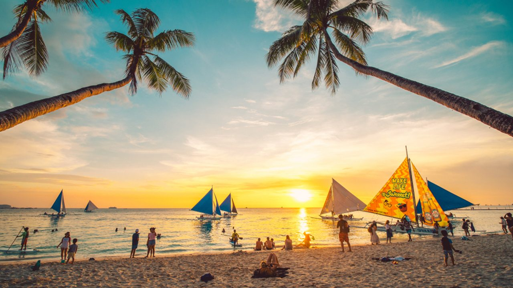
Boracay Island
★ 4.8 (5,465 reviews) • Island & Beach
World-famous for its 4-kilometer stretch of powdery White Beach, vibrant nightlife, and crystal-clear turquoise waters. It serves as the ultimate tropical beach destination for relaxation and water sports.
Location: Malay, Aklan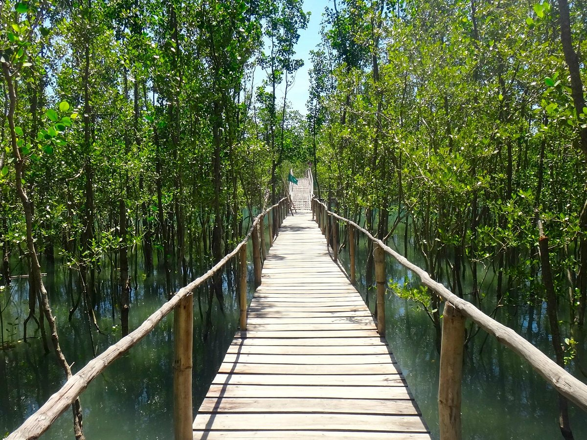
Kalibo & Bakhawan Eco-Park
★ 4.5 (1,240 reviews) • Eco-Park & Nature
The capital of Aklan and home to the famous Ati-Atihan Festival. It features the Bakhawan Eco-Park, an award-winning 220-hectare mangrove forest with a long bamboo boardwalk leading out to the sea.
Location: Kalibo, Aklan꩜Iloilo: Heritage, Islands, and Gastronomy
Serving as the regional center, Iloilo balances preserved Spanish colonial history with mesmerizing raw islandscapes.
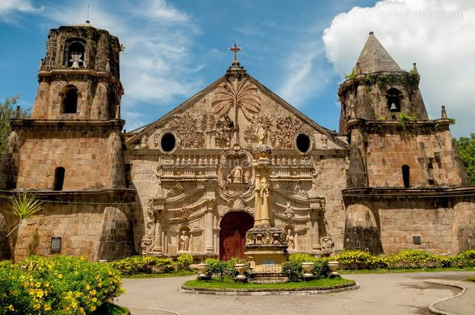
Miag-ao Church
★ 4.7 (1,150 reviews) • UNESCO Heritage Site
A stunning UNESCO World Heritage Site. This Baroque Roman Catholic church is famous for its intricate, ochre-colored facade decorated with a relief of a coconut tree, blending European artistic style with native Filipino flora.
Location: Miag-ao, Iloilo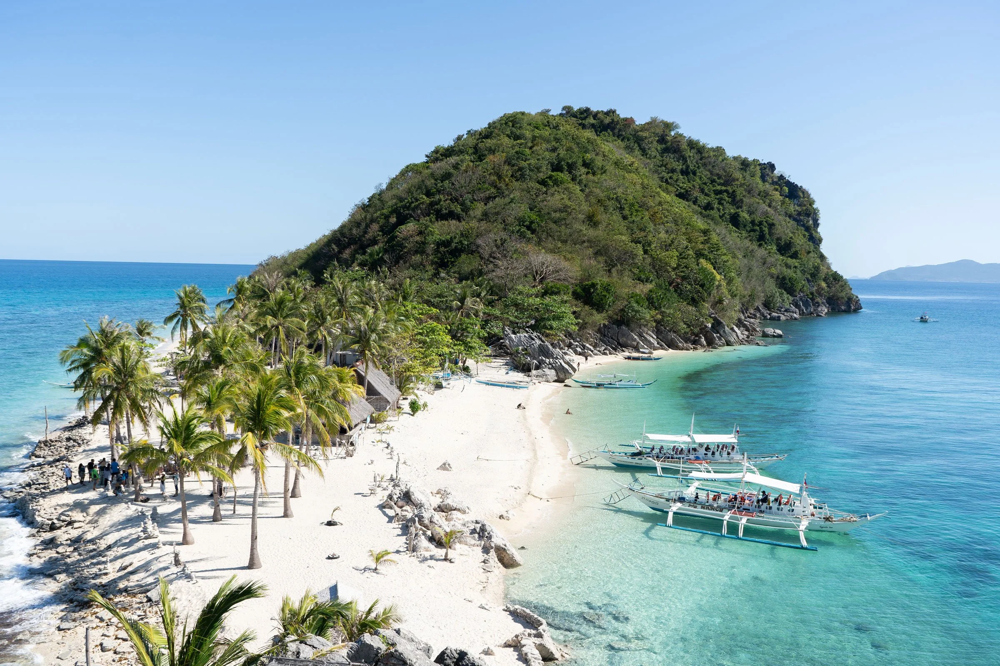
Islas de Gigantes
★ 4.6 (890 reviews) • Island Hopping
A remote archipelago featuring dramatic limestone karst formations, hidden lagoons, pristine sandbars (like Bantigue), and incredibly affordable fresh scallops.
Location: Carles, Iloilo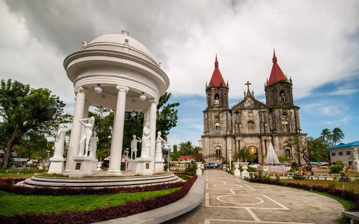
Iloilo City Heritage Sites
★ 4.6 (1,420 reviews) • Historical Walk
Take a cultural stroll through the historic downtown Calle Real, admire the iconic Molo Church (the feminist church) and the nearby Molo Mansion, and enjoy a relaxing sunset walk along the Iloilo Esplanade.
Location: Iloilo City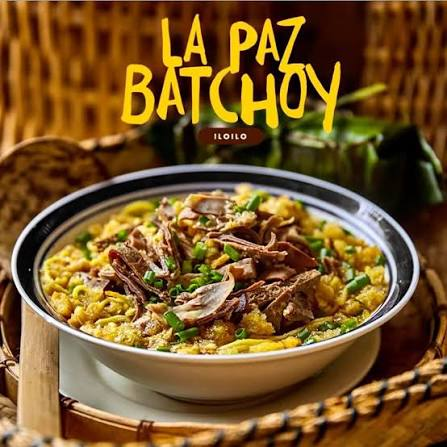
Gastronomy Capital
★ 4.8 (2,100 reviews) • Culinary Experience
Designated as a UNESCO Creative City of Gastronomy, make sure to grab a steaming bowl of authentic La Paz Batchoy at the local public market or savory Pancit Molo.
Location: Iloilo City꩜Negros Occidental: Sugar Heritage and Eco-Escapes
Known as the "Sugarbowl of the Philippines", this province offers a brilliant look into old hacienda life alongside stunning mountain and coastal escapes.
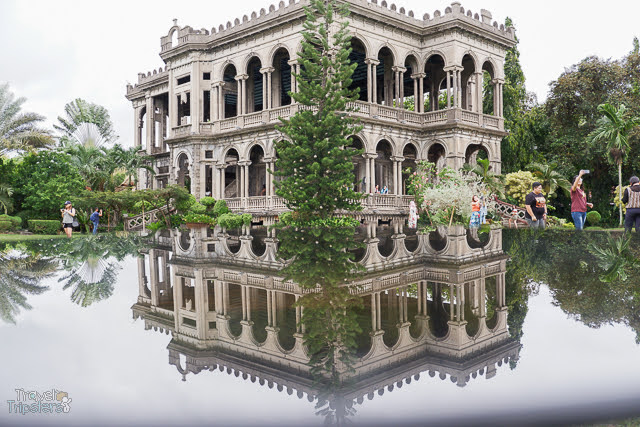
The Ruins
★ 4.5 (5,333 reviews) • Historical Landmark
Dubbed the "Taj Mahal of the Philippines". It is the majestic concrete skeletal frame of a 1900s grand mansion built by a sugar baron in memory of his late wife. It is beautifully illuminated at night.
Location: Talisay City, Negros Occidental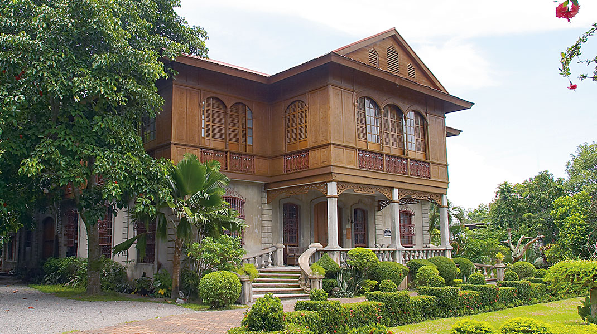
Silay City Heritage Houses
★ 4.6 (640 reviews) • Ancestral Museum
Often called the "Paris of Negros," Silay is home to dozens of beautifully preserved ancestral homes, such as the Balay Negrense Museum, which offers a glimpse into the late 19th-century golden era of sugar barons.
Location: Silay City, Negros Occidental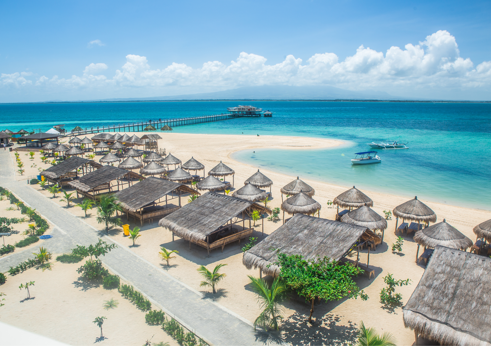
Lakawon Island
★ 4.1 (1,694 reviews) • Island Resort
A banana-shaped island paradise featuring a pristine cream-sand beach. It is home to Tawhai, Asia's largest floating bar, where you can lounge with a drink over crystal-clear waters.
Location: Cadiz City, Negros Occidental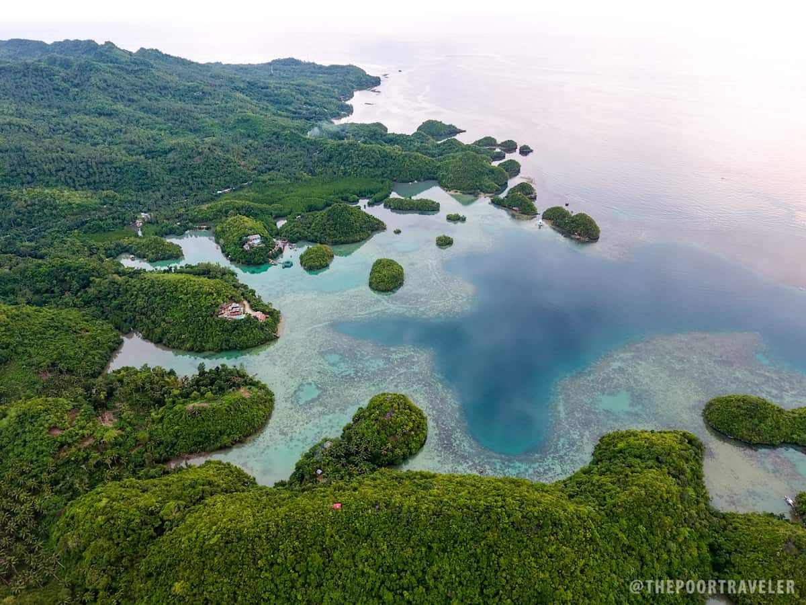
Sipalay City
★ 4.6 (980 reviews) • Coastal Paradise
Often called the "Jewel of the Sugar Island," it is heavily sought out for its scenic sugarloaf islets, diving spots, and idyllic resorts like Perth Paradise.
Location: Sipalay City, Negros Occidental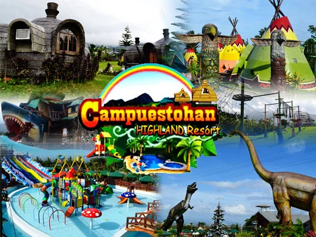
Campuestohan Highland Resort
★ 4.4 (5,000 reviews) • Highland Resort
Located on the cool highlands bordering Bacolod and Talisay, this whimsical themed amusement park features swimming pools, zip lines, sky bikes, and family attractions.
Location: Talisay City, Negros Occidental꩜Guimaras: The Mango Capital
Just a short 15-minute boat ride from Iloilo City lies Guimaras, famous for producing some of the sweetest mangoes in the entire world.
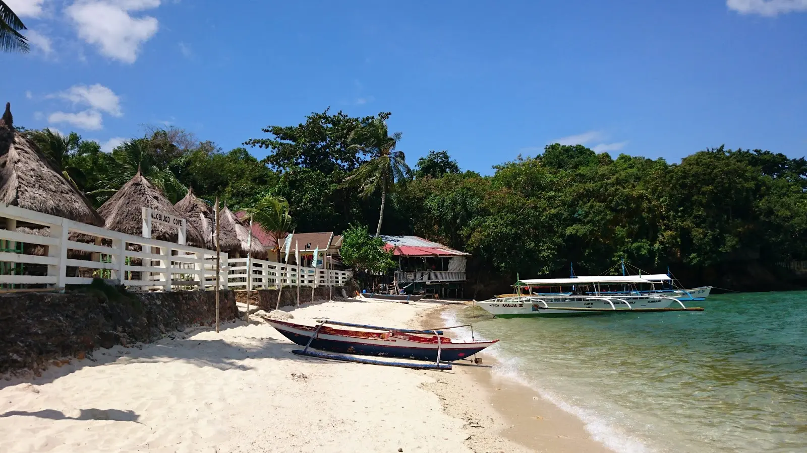
Alubihod Beach & Island Hopping
★ 4.1 (126 reviews) • Beach
The island's primary jump-off point for beachgoers. From here, you can charter boats to explore nearby coves, Natago Beach, and Turtle Island.
Location: Nueva Valencia, Guimaras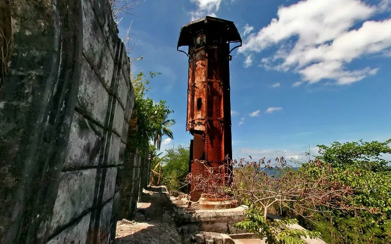
Guisi Lighthouse
★ 4.4 (797 reviews) • Historical Landmark
The ruins of an 18th-century Spanish colonial lighthouse standing atop a rugged cliff overlooking the sea. It provides spectacular rustic backdrops and panoramic coastal views.
Location: Nueva Valencia, Guimaras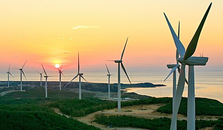
San Lorenzo Wind Farm
★ 4.5 (219 reviews) • Wind Farm
A striking green energy development featuring massive wind turbines set against rolling hills, offering iconic photo spots across the island.
Location: San Lorenzo, Guimaras꩜Antique: Where Mountains Meet the Sea
Antique is a rugged paradise tailored for outdoor enthusiasts who prefer rustic, off-the-beaten-path destinations.
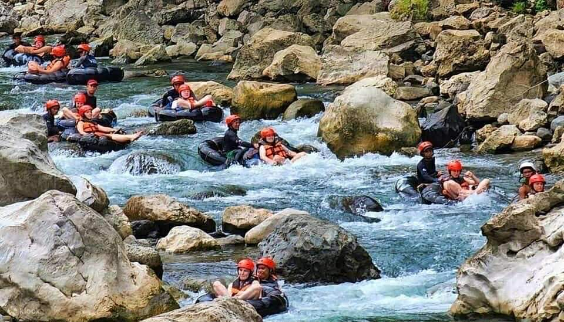
Tibiao Eco-Adventure
★ 4.5 (530 reviews) • Adventure Park
Famous for its unique Kawa Hot Baths—where you lounge inside a large iron cauldron heated by a wood fire underneath, infused with local herbs and flowers. You can also experience extreme river tubing down the Tibiao River.
Location: Tibiao, Antique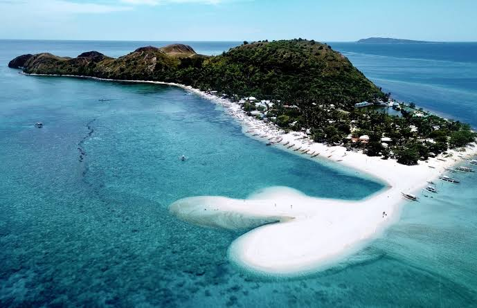
Mararison (Malalison) Island
★ 4.6 (410 reviews) • Island & Trekking
A spectacular island off the coast of Culasi featuring rolling green hills reminiscent of Batanes, clear turquoise waters, and a shifting sandbar.
Location: Culasi, Antique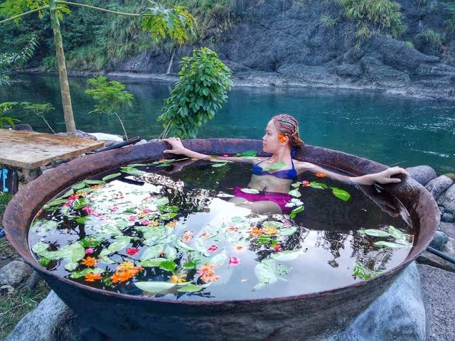
Tibiao Kawa Hot Bath
★ 4.7 (380 reviews) • Eco Spa Experience
A unique and relaxing experience where you soak in a giant outdoor cauldron (kawa) filled with warm water and aromatic local leaves, surrounded by lush rainforest views.
Location: Tibiao, Antique